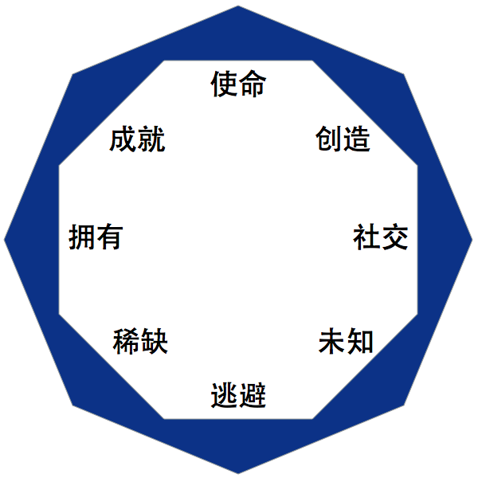
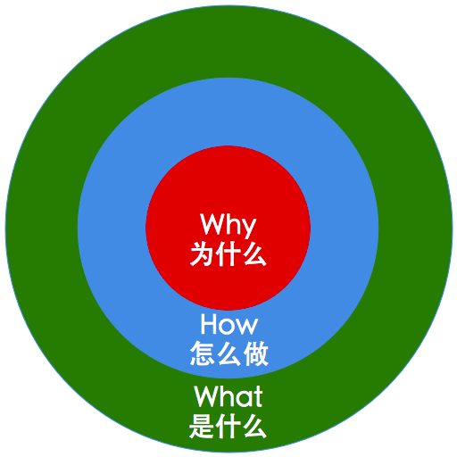
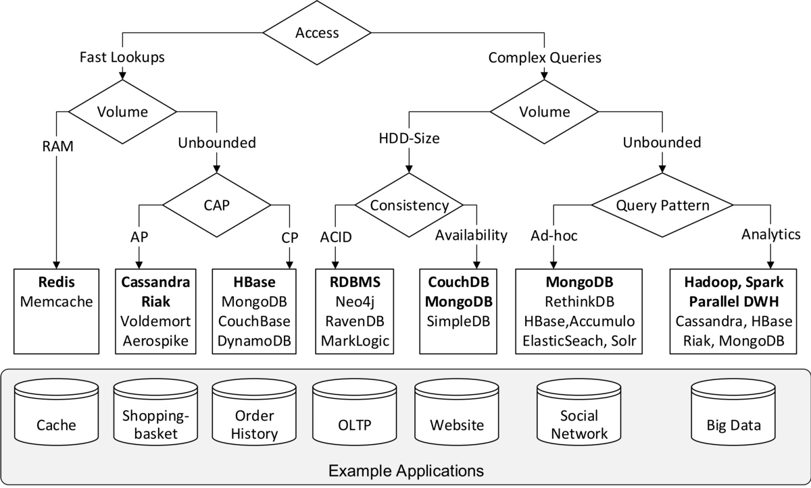
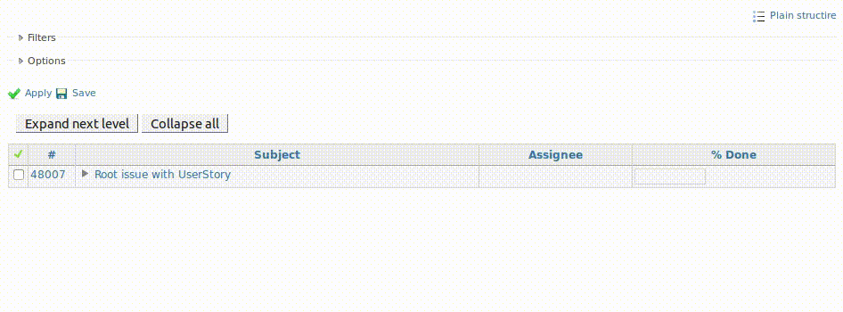
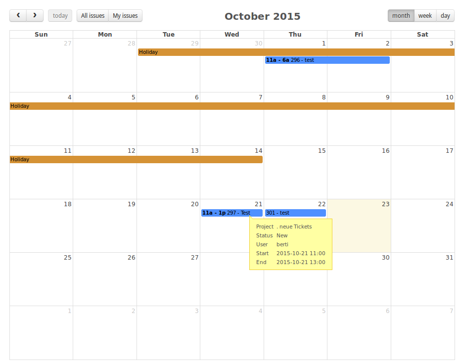

MoClippings #13 大腦行為科學好有趣
發刊日 : 2016/09/24 - 2016/10/31
資訊知事
- Fogg行为模型 - BJ Fogg’s Behavior Model
- Behavior Model = Motivation Ability Trigger
- 你为什么不想做，想做也做不到？ - 简书
![[Fogg Model]](/Clippings/2016/MoClippings-13/14825679685650.jpg "[Fogg Model]")
- 游戏化（Gamification）产品之二：Octalysis／八角行为分析简介 | 人人都是产品经理
- 重大使命感和召唤
- 进度与成就感
- 创造授权与反馈
- 所有权与拥有感
- 社交影响与同理心
- 稀缺性与渴望
- 未知性与好奇心
- 亏损与逃避心
- 
- 
- Google、Microsoft 等 5 家科技巨頭成立 AI 組織，試圖制定發展準則 | TechNews 科技新報 - 5 家科技巨頭 Amazon、Google、Facebook、IBM、Microsoft 合夥成立共同研究 AI 的非營利組織，但主要是研究 AI 與人類與社會的關係。
- 【閱讀技巧】你的書還停留在第一章嗎？學會這幾招，知識如滾雪球累積 | VidaOrange
- 讀的快才讀的好、才會更想讀。
- 讀的快的重點在於「雜學資料庫」的累積。
- 大量而重複閱讀，在學習成效上，比「慢而精讀」更有效。
- 如何學習：學習困難科目的實用思維方法 - 美國加州大學聖地亞哥分校 | Coursera
- 常常覺得自己沒辦法學習一門新的知識嗎？ coursera 上面有一門很不錯的課程。很值得去上。(我自己也還沒看完啦) 整門課程會提到大腦如何記憶，如果運作到怎麼學習開始說起。
- 課程作者 Barbara Oakley 出的書籍：用對腦，從此不再怕數字：學會如何學習，以及如何創意思考，解決(幾乎)所有的問題 https://goo.gl/a3EoSK
- 《学习之道》 芭芭拉·奥克利(Barbara·Oakley)【摘要 书评 试读】图书
- 課程學習的筆記：http://nickwarm.logdown.com/posts/966498
- 學習與解題 | Ruddy Lee 分享空間
- C.W.Wang, MD | 王姿文: 線上讀書會實驗 -- 學習法 (1) 實戰經驗分享
- C.W.Wang, MD | 王姿文: 線上讀書會實驗 -- 學習法 (2) 如何教如何學
- 再忙也要看本書！全球頂尖CEO推薦的25本必讀書單，來看看你讀過哪些？-書｜職場｜管理｜閱讀-風傳媒-經理人
- 《長日將盡》（The Remains of the Day）
- 《船上的男孩：9位美國人的1936年奧林匹亞征途》（暫譯：原書名《The Boys in the Boat: Nine Americans and Their Epic Quest for Gold at the 1936 Olympics》）
- 《權力的終結》（暫譯，原書名《The End of Power》）
- 《創新的兩難》（The Innovator’s Dilemma）
- 《時基競爭》（Competing Against Time）
- 《拿破崙》（暫譯：原書名《Napoleon》）
- 《魅力學》（The Charisma Myth）
- 《搜尋你內心的關鍵字》（Search Inside Yourself）
- 《智慧型股票投資人》（The Intelligent Investor）
- 《商業冒險》（Business Adventures）
- 《亂世中的快樂之道》（The Art of Happiness）
- 《君王論》（The Prince）
- 《孫子兵法》
- 《挺身而進》（Lean In）
- 《有種感覺叫快樂》（A Short Guide to a Happy Life）
- 《你要如何衡量你的人生？》（How Will You Measure Your Life?）
- 《杜拉克談高效能的五個習慣》（The Effective Executive）
- 《貨幣崛起》（The Ascent of Money）
- 《玩成大贏家》（Playing to Win: How Strategy Really Works）
- 《引爆趨勢》（The Tipping Point）
- 《尼古拉特斯拉自傳》（暫譯，原書名《My Inventions: The Autobiography of Nikola Tesla》）
- 《檢查表：不犯錯的祕密武器》（The Checklist Manifesto: How to Get Things Right）
- 《麥田捕手》（The Catcher in the Rye）
- 《世界是平的》（The World Is Flat）
- 《阿特拉斯聳聳肩》（Atlas Shrugged）
「透視數據下的商機：運用Google Analytics發掘商業洞見」導讀會 | 大衛的觀察日記 - 連啟佑 老師 導讀的超完整心得
什么是沉浸式设计？它有什么具体特点？ - 知乎 - 沉浸式設計
- iOS 市佔率官方報表：App Store - Support - Apple Developer
- 關於《林伯Lean Bot》誕生的那些事— 技術麻瓜的第一個開源專案 – ㄱㅅㅁ - 林伯其實是一個結合跨辦公室通訊軟體Slack, Google Calendar, Google Sheet與線上表單完成的簡易版請假系統。
- 淺談防水機構設計 – Excell Design
- 防水防塵(IP等級)簡介 – Excell Design
技術知事
開發心法
-
- 產生圖表的套件，這些都相當簡單易用，保証人人可以快速上手
- 一、Google Charts https://developers.google.com/chart/
- 二、ECharts http://echarts.baidu.com/
- 三、Chart.js http://www.chartjs.org/
- 四、Elasticsearch + Kibana https://www.elastic.co/
- 五、PHP版EChart https://github.com/hisune/Echarts-PHP
- 我們要如何判斷二篇文章是相關連的？
- 我要如何將圖案文字轉換成一般文字？
- 一、PHP版Tesseract https://github.com/thiagoalessio/tesseract-ocr-for-php
- 產生圖表的套件，這些都相當簡單易用，保証人人可以快速上手
系統語系調整 於 CentOS
- /boot/grub/menu.lst
- /etc/sysconfig/i18n
ruanyf/document-style-guide: 中文技术文档的写作规范 - 中文文件寫作規範
- Windows 怎麼知道我已連線到網際網絡? 原來當中大有文章! | Justin Lau 的 IT世界 - 點部落
- http://www.msftncsi.com/ncsi.txt
- 這篇文章記錄 Windows 怎麼判斷電腦已經連上網路，原來會使用 msftncsi 這個服務。
- 淺談二分搜尋法 | TechBridge 技術共筆部落格 - 一份關於循序搜尋以及二元搜尋的基本介紹。
Advanced GIT for Developers - Lorna Jane Mitchell - Laracon EU 2015 - YouTube - 雖說是 Advanced git for developers 但內容其實還蠻實用的，尤其對於使用 git 一陣子的朋友，影片的內容會跟你說提到 git rerere 幫你記錄合併方法，跟 git bisect 兩個極少用的指令。
The art of using Repositories in Laravel 5.3 - 本篇文章便是以 Laravel Repository 模式為切入點，但重點是介紹如何在這樣的模式將資料快取起來，當然我們都可以自己寫快取邏輯，畢竟 Repository 已經是一層封裝了，要寫快取也會比較容易一些，但永遠別忘了可能已經有人寫好了相同的功能，所以作者介紹了 Rinvex Repository 這個套件，可以很直覺的在 Repository 模式將資料快取起來
- 高并发环境下生成订单唯一流水号方法:SnowFlake | 标点符
- 时间戳，工作机器id，序列号(毫秒级时间41位+机器ID 10位+毫秒内序列12位)
- 高負載多連線的環境下，生成唯一ID流水號的方法
- NoSQL資料庫的調查與決策指引 | MLab - 非常值得慢慢細細閱讀的資料庫選擇及背景細節技術知識文章。
- 
- 如何在實務上使用 TDD 來開發 - twMVC#12 - YouTube - 91哥在 twMVC 的錄影課程，實務上如何使用 TDD
- 细聊分布式ID生成方法_架构师之路_传送门 - 分布式ID的生成方法
PHP, Laravel
- excellentingenuity/EloquentUUID: A Package for easily adding UUID to Eloquent Models
- 一個使用 Eloquent 輕易產生 UUID 的套件
- ConsoleTVs/Charts: Multi-library chart package to create interactive charts using laravel.
- 一個 Laravel 製作圖表的工具
5 Best Security Tips for A laravel Application
- 1- Avoiding SQL injection
2- Forcing HTTPS when exchanging sensitive data
1234Route::filter('https', function() {if ( ! Request::secure())return Redirect::secure(URI::current());});3- Using mass assignment with care
- 4 - Cross-site Request Forgery
- 5- Escaping content to prevent cross-site scripting (XSS)
- A class to parse, build and manipulate URLs - murze.be - 幫助解析部分網址及組合網址連結的工具
- Admin Panel Building Blocks :: Backpack for Laravel - 提供很多後台使用的介面以及外掛
- exakat/php-static-analysis-tools: A reviewed list of useful PHP static analysis tools - 這邊蒐集了許多靜態分析的工具
- mihaeu/dephpend: Detect flaws in your architecture, before they drag you down into the depths of dependency hell ... - PHPUnit 作者常使用的 PHP 程式靜態分析工具
- Testing PHP Code with Atoum - an Alternative to PHPUnit - 相較於 Behat, phpspec 這個測試框架(Test Framework) 值得看一下。從單元測試一直到 Code Coverage 的分析等等都提供了產出。
- jwage/phpchunkit: PHPChunkit - PHPUnit test runner with test chunking capabilities. - PHPChunkit 是一個可以幫忙把 PHPUnit 的測試做平行執行的工具，對於有非常多測試案例的專案來說，可以減少不少時間。
- Mockery: A Better Way - mockery vs phpunit 原生 mock
- laravel-payum/PayumBuilderManagerTest.php at master · recca0120/laravel-payum 在 Mockery 測試 protected method 的方法。
- PHPUnit 作者 Sebastian 分享給社群夥伴的程式碼靜態分析工具：
- https://phpmd.org/ - 程式碼品質分析工具
- https://github.com/mihaeu/dephpend - dephpend 是 Sabastian 跟一個學生合作的東西，目前還在開發中
- https://github.com/squizlabs/PHP_CodeSniffer - Phpcs 就是php_cs_fixer 也等於php lint
- https://github.com/sebastianbergmann/phpcpd - Copy/Paste Detector (CPD) for PHP code.
- exakat/php-static-analysis-tools: A reviewed list of useful PHP static analysis tools
Library
- Cyrano API - Make your Chat Bot Multilingual - 提供多國語系的機器人 API #Library
- Uniqush - Push Notification Solution for Mobile Platforms [Home] - 免費的提供 Push Message 的服務給手機平台
軟體工具
- 綠野遊蹤 - Google Play Android 應用程式
- 匯入gpx檔案，於地圖描繪軌跡，配合GPS的衛星定位，讓使用者清楚自己身處於軌跡中的位置，降低迷途風險，可用於登山、健行等戶外活動參考使用。
- Figma: the collaborative interface design tool.
- 吃 Sketch 檔案。且可以即時多人共同編輯，在2016年底前是免費的。
- Figma VS Sketch – Medium
- Free Mac Data Recovery Software. Recover Files. Disk Drill - 協助在 MAC OS 上面進行硬碟資料復原掃描的工具
- The PHP Practitioner - 適合初學者觀看的 PHP 課程
- WordPress Packagist: Manage your plugins and themes with Composer - 把 Wordpress 的 Plugin 及 Theme 也變成用 composer 做管理
- Packagist Semver Checker - madewithlove - 驗證 composer 語法的線上工具
- DOG TUNNEL - P2P端口映射 翻牆工具
- 下載 Windows 10 虛擬機器 - Windows 應用程式開發
Redmine
- jihh/redmine_ldap_synchronizer: Plugin for synchronize Redmine account from LDAP AuthSource. - Redmine 的 LDAP 帳號同步工具
- LDAP avatatr - Plugins - Redmine - 從 LADAP 取得頭像的工具
Redmine Issues Tree - Plugins - Redmine
- 
-
- 
- EVM can help you to track your project progress and its status and to forecast the future performance of the project. - Earned Value Management (EVM) Calculation Plugin
- Redmine Impersonate - Plugins - Redmine - This plugin let administrators securely login to other users’ account with a single click. 這個外掛可以方便管理者很快速的切換到其他使用者帳號
前端開發
- vuejs/vue-resource: The HTTP client for Vue.js
- 新手向：Vue 2.0 的建议学习顺序 - Code, Design & Things in between - 知乎专栏
- ES6 for Everyone — The best way to learn modern ES6 JavaScript - 學習 ES6 的影片集合
- pasteIt - textarea feature extend which make paste / drag image possible - 使用 pasteIt 這個 JavaScript 做 textarea 的擴充，讓他可以拖拉或複製貼上
- Documentation Index - faker.js - generate massive amounts of fake data in the browser and node.js 在 JavaScript 端產生假資料的小工具。
- 20 Free Bootstrap 3 Admin Dashboard Templates 2016 - Colorlib 20 個免費的 bootstrap 為基底的後台管理介面
- Book of Modern frontend tooling
- 寫出所有人都能輕鬆讀懂的測試程式_陳鋒逸@ModernWeb2016.pdf